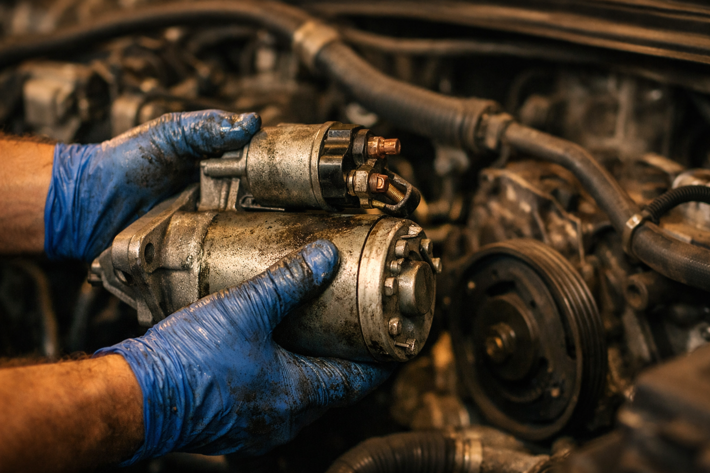
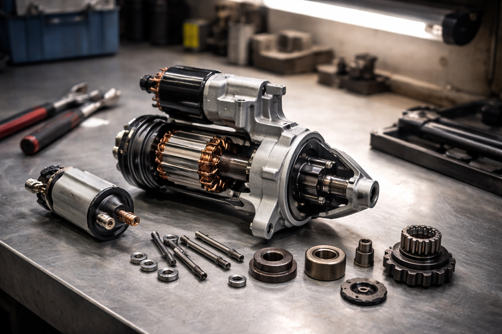

Diagnostic, réparation et remplacement de démarreur et alternateur. Ali-Ka identifie la panne et remet votre véhicule en route à Etterbeek.

Votre voiture ne démarre pas. On connaît la scène : vous êtes en retard, vous tournez la clé et… rien. Le problème vient-il de la batterie, du démarreur ou de l'alternateur ? Trois composants différents, trois pannes différentes, mais des symptômes qui se ressemblent. Pour poser le bon diagnostic, il faut comprendre le rôle de chacun.
Le démarreur est un petit moteur électrique. Son unique fonction : lancer la rotation du moteur thermique quand vous tournez la clé ou appuyez sur le bouton start. Si vous entendez un cliquetis rapide au démarrage, c'est souvent lui. Si rien ne se passe du tout — aucun bruit, aucune réaction — il peut être en cause aussi, mais la batterie reste suspecte.
L'alternateur intervient après le démarrage. C'est lui qui recharge la batterie pendant que vous roulez et qui alimente tout le circuit électrique : éclairage, tableau de bord, climatisation, autoradio. Si votre batterie se décharge régulièrement malgré des remplacements récents, si vos phares faiblissent en roulant ou si le voyant batterie s'allume, alors le problème vient probablement de l'alternateur, pas de la batterie elle-même. Comme le souligne Touring, un alternateur défaillant est souvent la cause cachée des pannes de batterie à répétition.
Bon, voici une méthode simple pour y voir plus clair. Si le moteur tourne lentement au démarrage puis finit par se lancer, la batterie manque de charge. Si vous entendez un clic sec et net sans que le moteur ne bouge, le démarreur est probablement bloqué. Si la voiture démarre normalement mais que le voyant batterie s'allume en roulant, l'alternateur ne remplit plus son rôle.
Bien sûr, ces indices ne suffisent pas toujours. Une batterie en fin de vie peut mimer un problème de démarreur. Un alternateur défaillant finit par vider la batterie, ce qui ressemble alors à une panne de batterie. Chez Ali-Ka, Avenue des Casernes 10 à Etterbeek, nous utilisons un équipement de diagnostic professionnel pour mesurer la tension de la batterie, le courant d'appel du démarreur et le débit de charge de l'alternateur. Ce test complet permet d'identifier la pièce défaillante avec certitude et d'éviter tout remplacement inutile.
Les automobilistes circulant entre Etterbeek, Ixelles, Schaerbeek, Woluwe-Saint-Pierre et le quartier européen nous font confiance depuis plus de 22 ans. Les trajets urbains courts et les démarrages fréquents à Bruxelles sollicitent fortement ces composants, surtout en hiver quand le chauffage, les phares et les essuie-glaces fonctionnent en permanence.
Si le diagnostic confirme qu'un remplacement est nécessaire, Ali-Ka intervient généralement dans la journée. Nous utilisons des pièces de qualité conformes aux spécifications de votre véhicule. Après chaque remplacement d'alternateur, nous testons la batterie pour vérifier qu'une sous-charge prolongée ne l'a pas endommagée. De même, lors d'un changement de démarreur, nous contrôlons l'ensemble du circuit de démarrage.
Franchement, n'attendez pas de tomber en panne au milieu du rond-point Schuman. Voyant batterie allumé ? Démarrage laborieux ? Lumières qui faiblissent ? Passez chez Ali-Ka à Etterbeek ou appelez le 02 647 47 01 pour un diagnostic rapide. Et si vous êtes déjà immobilisé en route, notre partenaire Helpcar assure le dépannage automobile à Bruxelles.
Si votre voiture ne démarre pas du tout ou émet un cliquetis, le démarreur est souvent en cause. Si la batterie se décharge régulièrement ou que le voyant batterie s'allume en roulant, c'est plutôt l'alternateur. Chez Ali-Ka à Etterbeek, nous effectuons un diagnostic électrique complet pour identifier précisément l'origine de la panne.
Le prix varie selon le modèle de votre véhicule et la pièce concernée. Ali-Ka à Etterbeek propose des tarifs compétitifs avec des pièces de qualité. Appelez le 02 647 47 01 pour obtenir un devis adapté à votre voiture.
En général, le remplacement d'un démarreur prend entre 1 et 2 heures. Pour un alternateur, comptez 1 à 3 heures selon l'accessibilité sur votre véhicule. Ali-Ka s'efforce de réaliser l'intervention dans la journée.
Pas nécessairement, mais un alternateur défaillant peut avoir endommagé la batterie en la sous-chargeant. Chez Ali-Ka, nous testons systématiquement la batterie après le remplacement de l'alternateur et vous conseillons honnêtement sur la nécessité de la remplacer.
Si le moteur tourne lentement au démarrage, c'est souvent la batterie. Si vous entendez un clic sec sans que le moteur ne tourne, le démarreur est probablement en cause. Un test chez Ali-Ka à Etterbeek permet de déterminer rapidement l'origine de la panne et d'éviter un remplacement inutile.